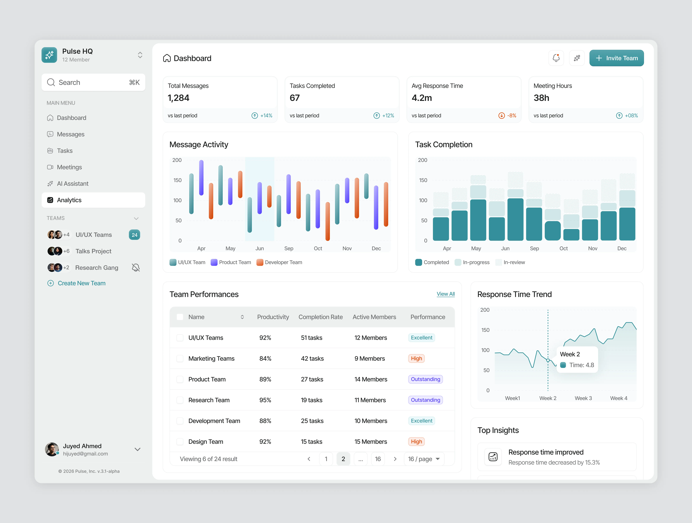
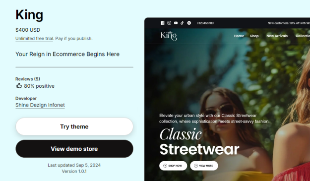
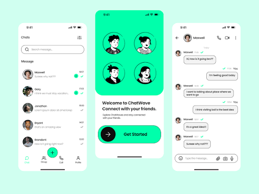

Available for freelance work
I design and build fast, elegant web experiences.
Hi, I'm Alex, a frontend developer and UI designer with 6 years of experience turning complex ideas into clean, accessible and high-performing products.
6+
Years of experience
40+
Projects shipped
About me
A quick look at who I am, where I've worked and what I use every day.
I'm a frontend developer who cares about the details: smooth interactions, clear typography and code that's easy to maintain. I work closely with designers and backend teams to ship products people enjoy using.
-
2022 – Present
Senior Frontend Developer
Northwind Labs. Leading the design system and web app.
-
2019 – 2022
Frontend Developer
Brightside Studio. Built marketing sites and SaaS dashboards.
-
2015 – 2019
B.Sc. Computer Science
University of Westbridge. Graduated with honors.
Skills
HTML & CSS95%
JavaScript90%
React88%
Tailwind CSS96%
Node.js75%
Figma85%
Also comfortable with
TypeScript
Next.js
Accessibility
Git & CI/CD
REST & GraphQL
Performance
Selected projects
A few things I've designed and built recently.




Let's work together
Tell me about your project and I'll reply within one business day.
New message